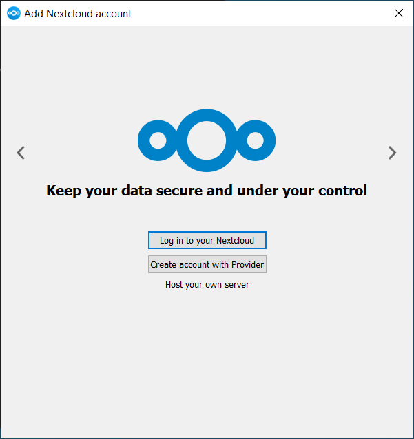
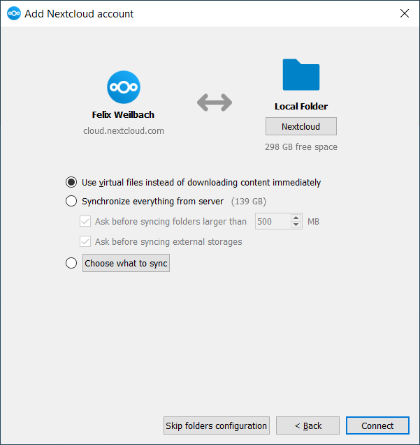

Installation
You can download the latest version of the Nextcloud Desktop Synchronization Client from the Nextcloud download page. There are clients for Linux, macOS, and Microsoft Windows.
The currently supported server releases are the latest three stable versions at time of publication. It means that the latest release series is supporting stable server major versions. See https://github.com/nextcloud/server/wiki/Maintenance-and-Release-Schedule for supported major versions.
Installation on macOS and Windows is the same as for any software application: download the program and then double-click it to launch the installation, and then follow the installation wizard. After it is installed and configured the sync client will automatically keep itself updated; see The Automatic Updater for more information.
Linux users must follow the instructions on the download page to add the appropriate repository for their Linux distribution, install the signing key, and then use their package managers to install the desktop sync client. Linux users will also update their sync clients via package manager, and the client will display a notification when an update is available.
Linux users must also have a password manager enabled, such as GNOME Keyring or KWallet, so that the sync client can login automatically.
You will also find links to source code archives and older versions on the download page.
System Requirements
Windows 10+ (64-bits only)
macOS 12.0+ (64-bits only)
Linux (Ubuntu 22.04 or openSUSE 15.5 or Alma 8 or ...) (64-bits only)
Note
For Linux distributions, we support, if technically feasible, the current LTS releases. For BSD, we support them if technically feasible but we do not test
Customizing the Windows Installation
If you just want to install Nextcloud Desktop Synchronization Client on your local system, you can simply launch the .msi file and configure it in the wizard that pops up.
Features
The MSI installer provides several features that can be installed or removed individually, which you can also control via command-line, if you are automating the installation, then run the following command:
msiexec /passive /i Nextcloud-x.y.z-x64.msi
The command will install the Nextcloud Desktop Synchronization Client into the default location with the default features enabled. If you want to disable, e.g., desktop shortcut icons you can simply change the above command to the following:
msiexec /passive /i Nextcloud-x.y.z-x64.msi REMOVE=DesktopShortcut
See the following table for a list of available features:
Feature |
Enabled by default |
Description |
Property to disable |
|---|---|---|---|
Client |
Yes, required |
The actual client |
|
DesktopShortcut |
Yes |
Adds a shortcut to the desktop |
|
StartMenuShortcuts |
Yes |
Adds a shortcut to the start menu |
|
ShellExtensions |
Yes |
Adds Explorer integration |
|
Installation
You can also choose to only install the client itself by using the following command:
msiexec /passive /i Nextcloud-x.y.z-x64.msi ADDDEFAULT=Client
If you for instance want to install everything but the DesktopShortcut and the ShellExtensions feature, you have two possibilities:
You explicitly name all the features you actually want to install (whitelist) where
Clientis always installed anyway:msiexec /passive /i Nextcloud-x.y.z-x64.msi ADDDEFAULT=StartMenuShortcuts
You pass the
NO_DESKTOP_SHORTCUTandNO_SHELL_EXTENSIONSproperties:msiexec /passive /i Nextcloud-x.y.z-x64.msi NO_DESKTOP_SHORTCUT="1" NO_SHELL_EXTENSIONS="1"
Note
The Nextcloud .msi remembers these properties, so you don't need to specify them on upgrades.
Note
You cannot use these to change the installed features, if you want to do that, see the next section.
Changing Installed Features
You can change the installed features later by using REMOVE and ADDDEFAULT properties.
If you want to add the the desktop shortcut later, run the following command:
msiexec /passive /i Nextcloud-x.y.z-x64.msi ADDDEFAULT="DesktopShortcut"
If you want to remove it, simply run the following command:
msiexec /passive /i Nextcloud-x.y.z-x64.msi REMOVE="DesktopShortcut"
Windows keeps track of the installed features and using REMOVE or ADDDEFAULT will only affect the mentioned features.
Compare REMOVE and ADDDEFAULT on the Windows Installer Guide.
Note
You cannot specify REMOVE on initial installation as it will disable all features.
Installation Folder
You can adjust the installation folder by specifying the INSTALLDIR
property like this:
msiexec /passive /i Nextcloud-x.y.z-x64.msi INSTALLDIR="C:\Program Files\Non Standard Nextcloud Client Folder"
Be careful when using PowerShell instead of cmd.exe, it can be tricky to get
the whitespace escaping right there.
Specifying the INSTALLDIR like this only works on first installation, you cannot simply re-invoke the .msi with a different path. If you still need to change it, uninstall it first and reinstall it with the new path.
Disabling Automatic Updates
To disable automatic updates, you can pass the SKIPAUTOUPDATE property.:
msiexec /passive /i Nextcloud-x.y.z-x64.msi SKIPAUTOUPDATE="1"
Launch After Installation
To launch the client automatically after installation, you can pass the LAUNCH property.:
msiexec /i Nextcloud-x.y.z-x64.msi LAUNCH="1"
This option also removes the checkbox to let users decide if they want to launch the client for non passive/quiet mode.
Note
This option does not have any effect without GUI.
No Reboot After Installation
The Nextcloud Client schedules a reboot after installation to make sure the Explorer extension is correctly (un)loaded.
If you're taking care of the reboot yourself, you can set the REBOOT property:
msiexec /i Nextcloud-x.y.z-x64.msi REBOOT=ReallySuppress
This will make msiexec exit with error ERROR_SUCCESS_REBOOT_REQUIRED (3010).
If your deployment tooling interprets this as an actual error and you want to avoid that, you may want to set the DO_NOT_SCHEDULE_REBOOT instead:
msiexec /i Nextcloud-x.y.z-x64.msi DO_NOT_SCHEDULE_REBOOT="1"
Installation Wizard
The installation wizard takes you step-by-step through configuration options and account setup. First, you need to enter the URL of your Nextcloud server.
If you already have an account on a Nextcloud instance, you want to
press the button Login to your Nextcloud. If you don't have a
Nextcloud instance and an account there, you might want to register an
account with a provider. Press Create account with Provider in
that case. Please keep in mind that the desktop client might have
built without provider support. In that case, you won't see this
page. Instead, you will be prompted with the next page.
Enter the URL for your Nextcloud instance. The URL is the same URL that you type into your browser when you try to access your Nextcloud instance.

Now your web browser should open and prompt you to login into your Nextcloud instance. Enter your username and password in your web browser and grant access. After you did that, go back to the wizard. Please keep in mind that you might not need to enter your username and password if you are already logged in to your browser.
On the local folder options screen, you may sync all of your files on
the Nextcloud server, or select individual folders. The default local
sync folder is Nextcloud, in your home directory. You may change
this as well.
When you have completed selecting your sync folders, click the Connect button at the bottom right. The client will attempt to connect to your Nextcloud server, and when it is successful, the wizard closes itself. You can now observe the sync activity if you open the main dialogue by clicking on the tray icon.